31 imagens no texto. 15 encontradas no Wikimedia Commons, 2 com imagem similar, 14 fora do Commons ou sem fonte identificada. Cada cartão mostra a versão do Commons (quando há) e a licença; os arquivos em melhor resolução estão na pasta Imagens/U7/atuais.
Verde: domínio público ou CC0, uso livre. Laranja: Creative Commons BY ou BY-SA, uso permitido com crédito ao autor na legenda. Vermelho: licença não livre ou não identificada — não usar sem autorização. Clique na miniatura para abrir a página do arquivo e conferir a licença.
Unidade 7. A Era Vargas e seu contexto (1930-1954)
1Retrato oficial colorizado de Getúlio Vargas (abertura da unidade) Encontrada no CommonsPublic domain · 1008×1338 px Getúlio Vargas - retrato oficial de 1930.JPG Autor/fonte: Desconhecido (colorização: Djalma Gomes Netto) Legenda/crédito no texto: “Domínio Público.” Mesma foto (retrato oficial de 1930), versão colorizada idêntica confirmada visualmente. Resolução maior no Commons. página no Commons · arquivo original
2Combatentes paulistas posando com bandeira de São Paulo e metralhadora junto a um trem, Revolução Constitucionalista de 1932 Encontrada no CommonsPublic domain · 1024×730 px Guarnição do Trem Blindado nº 4 em Barão Ataliba Nogueira, Itapira, agosto de 1932.jpg Autor/fonte: Desconhecido Legenda/crédito no texto: “Fonte: Arquivo do Estado de São Paulo” Mesma foto (identificada como imagem icônica da Revolução de 1932, guarnição do Trem Blindado nº4, Itapira/SP, ago.1932), confirmada visualmente. Crédito do livro (Arquivo do Estado de São Paulo) diverge do Commons, mas é a mesma imagem. página no Commons · arquivo original
3Cartaz do MMDC 'Você tem um dever a cumprir... Consulte a sua consciência', Revolução Constitucionalista de 1932 Encontrada no CommonsPublic domain · 619×952 px Poster MMDC nº7.jpg Autor/fonte: Desconhecido Legenda/crédito no texto: “Cartazes produzidos em São Paulo para conclamar a população a participar da Revolução Constitucionalista. Domínio Público.” Mesmo cartaz, confirmado visualmente; resolução maior no Commons (619x952 vs ~499x750 no livro). Também existe outra digitalização do mesmo cartaz em File:Cartaz Revolucionário.jpg (499x750), esta com menos qualidade. página no Commons · arquivo original
4Cartaz 'Abaixo a Dictadura', caricatura de bandeirante carregando figura caricata (Vargas), Revolução Constitucionalista de 1932 Encontrada no CommonsPublic domain · 684×1133 px Cartaz Revolucionário 1.jpg Autor/fonte: Desconhecido Legenda/crédito no texto: “Cartazes produzidos em São Paulo para conclamar a população a participar da Revolução Constitucionalista. Domínio Público.” Mesmo cartaz, confirmado visualmente; resolução maior no Commons (684x1133 vs 475x786 no livro). página no Commons · arquivo original
5Integrantes da Federação Brasileira pelo Progresso Feminino reunidas em frente a um edifício, 1930 Encontrada no CommonsPublic domain · 3504×1972 px Federação Brasileira para o Progresso Feminino.jpg Autor/fonte: Desconhecido (Fundo Federação Brasileira pelo Progresso Feminino) Legenda/crédito no texto: “Bertha Lutz ao assumir seu primeiro emprego público e, a seguir, uma reunião da Federação para o Progresso Feminina. Domínio Público/Arquivo Nacional.” Mesma foto (reunião da FBPF, 1930), confirmada visualmente. Resolução muito maior no Commons (3504x1972 vs 677x381 no livro). página no Commons · arquivo original
6Retrato de Bertha Lutz sentada em cadeira de vime em jardim, 1925 Encontrada no CommonsPublic domain · 3752×4621 px Bertha Lutz 1925.jpg Autor/fonte: Desconhecido (restauração: Adam Cuerden) Legenda/crédito no texto: “Bertha Lutz ao assumir seu primeiro emprego público e, a seguir, uma reunião da Federação para o Progresso Feminina. Domínio Público/Arquivo Nacional.” Mesma foto, confirmada visualmente pixel a pixel. Resolução muito maior no Commons (3752x4621 vs 396x488 no livro). página no Commons · arquivo original
Governo Constitucional de Vargas (1934-1937)
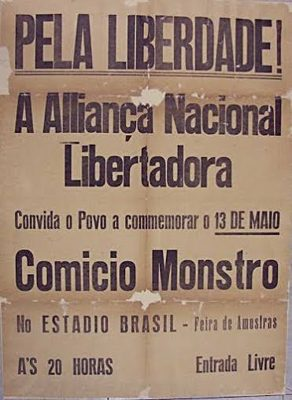
7Panfleto 'Pela Liberdade! A Alliança Nacional Libertadora convida o povo a commemorar o 13 de Maio - Comício Monstro no Estádio Brasil' Fonte não encontradaverificar Legenda/crédito no texto: “Antes de ser declarada ilegal a ANL promoveu muitos comícios. Na primeira imagem o panfleto que convida para um desses comícios. Arquivo Nacional.” Não localizado no Wikimedia Commons (categoria 'Aliança Nacional Libertadora' não existe no Commons) nem em busca na web. Livro credita 'Arquivo Nacional'; panfleto provavelmente digitalizado apenas em acervo fechado.
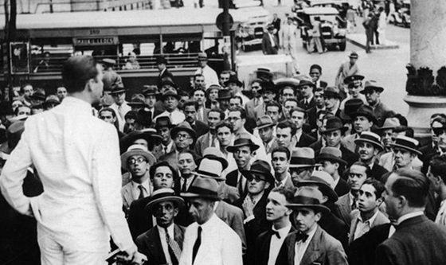
8Homem de terno branco discursando de costas para uma multidão numa rua do Rio de Janeiro - comício da ANL na Cinelândia, 1935 Fonte não encontradaverificar Legenda/crédito no texto: “Antes de ser declarada ilegal a ANL promoveu muitos comícios (...) Na segunda imagem, um comício em 1935 na Cinelândia no Rio de Janeiro. Arquivo Nacional.” Não localizado no Commons após várias buscas (comício ANL/Cinelândia/Praça Floriano 1935) nem categorias correlatas. Foto provavelmente só existe no acervo do Arquivo Nacional citado pelo livro.
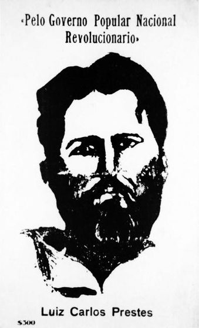
9Cartaz/postal estilizado 'Pelo Governo Popular Nacional Revolucionário - Luiz Carlos Prestes' ($300) Fonte não encontradaverificar Legenda/crédito no texto: “Fonte: https://memorialdademocracia.com.br/” Não localizado no Wikimedia Commons (categoria Luís Carlos Prestes tem 60 arquivos, nenhum deste cartaz estilizado) nem em busca na web. Pode ser item de acervo do Memorial da Democracia.
10Retrato de Plínio Salgado de terno, com cigarro na mão Encontrada no CommonsPublic domain · 1052×1381 px Plínio Salgado, 1959.tif Autor/fonte: Desconhecido (Fundo Correio da Manhã) Legenda/crédito no texto: “Vargas simpatizava muito com a Ação Integralista (AIB), liderada por Plínio Salgado...” Mesma foto, confirmada visualmente (terno risca de giz, lenço no bolso, cigarro na mão). Fundo Correio da Manhã, datada 1959 (o livro não data a foto). Resolução maior no Commons. página no Commons · arquivo original
11Capa da revista Anauê nº19, integralista a cavalo com bandeira e mãos depositando cartas com o símbolo Sigma Encontrada no CommonsPublic domain · 450×600 px Revista anaue19.jpg Autor/fonte: Desconhecido Legenda/crédito no texto: “Capa da revista Anauê n.19, representando "A revolução Integralista através do voto.” Mesma capa (revista Anauê nº19), confirmada visualmente. Mesma resolução aproximada do livro. página no Commons · arquivo original
12Integralistas marchando fazendo a saudação (braço erguido), 1935 Encontrada no CommonsPublic domain · 400×469 px SaudacaoIntegralista1935.jpg Autor/fonte: Desconhecido Legenda/crédito no texto: “Na segunda imagem, manifestantes da Ação Integralista Brasileira realizando o gesto em uma passeata. Domínio Público.” Mesma foto (publicada no livro 'Imagens do Sigma', Arquivo Público do RJ, 1935), confirmada visualmente. Mesma resolução aproximada do livro. página no Commons · arquivo original
13Retrato do general Olímpio Mourão Filho (1º dos três generais do Plano Cohen) Encontrada no CommonsPublic domain · 160×206 px GenMourãoFilho.jpg Autor/fonte: Superior Tribunal Militar (Brasil) Legenda/crédito no texto: “Os três generais que escreveram o Plano Cohen apareceram em outros momentos da História do Brasil... Fonte: Arquivo Nacional e Agência Brasil.” Mesma foto, mesmas dimensões exatas (160x206) do arquivo original do livro - é a própria fonte usada. página no Commons · arquivo original
14Foto do general Pedro Aurélio de Góes Monteiro (2º dos três generais do Plano Cohen), em uniforme, discursando Similar (não é a mesma imagem)Public domain · 1405×1982 px Góes Monteiro (1937).tif Autor/fonte: Desconhecido (Fundo Correio da Manhã) Legenda/crédito no texto: “Os três generais que escreveram o Plano Cohen apareceram em outros momentos da História do Brasil... Fonte: Arquivo Nacional e Agência Brasil.” Mesmo general (Góes Monteiro), mas foto diferente da do livro (que mostra um close mais informal, de terno civil); não foi encontrada no Commons uma foto idêntica à do livro apesar de várias buscas. Esta é da mesma época (1937), em uniforme, discursando. Há sugestão de troca ver n.º 5 em Sugeridas página no Commons · arquivo original
15Retrato do general/ministro da Guerra Eurico Gaspar Dutra em uniforme de gala (3º dos três generais do Plano Cohen) Encontrada no CommonsCC BY 3.0 br · 528×792 px Eurico Gaspar Dutra.jpg Autor/fonte: Agência Brasil Legenda/crédito no texto: “Os três generais que escreveram o Plano Cohen apareceram em outros momentos da História do Brasil... Fonte: Arquivo Nacional e Agência Brasil.” Mesmo retrato oficial (mesma pose, farda e condecorações), confirmado visualmente. Existe também versão colorizada em File:Eurico Gaspar Dutra verdadeiro.png (CC BY-SA 4.0, 852x1122). página no Commons · arquivo original
16Página do jornal Correio da Manhã de 1º de outubro de 1937 noticiando o Plano Cohen Encontrada no CommonsPublic domain · 623×460 px Plano Cohen - Correio da Manha.png Autor/fonte: Correio da Manhã (autor não identificado) Legenda/crédito no texto: “Os jornais, entre eles o Correio da Manhã, noticiaram o Plano Cohen que "teria sido interceptado" pelo exército brasileiro. Domínio Público.” É o próprio arquivo-fonte do livro: dimensões idênticas (623x460) e conteúdo pixel a pixel iguais. página no Commons · arquivo original
Estado Novo (1937-1945)
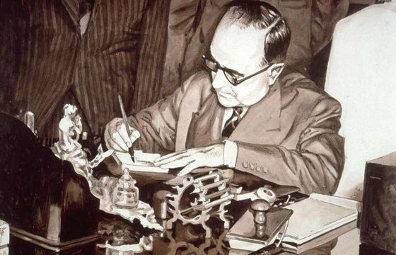
17Ilustração (aquarela/nanquim) de Getúlio Vargas assinando a CLT, à mesa, com assessores ao fundo Fonte não encontradaverificar Legenda/crédito no texto: “Getúlio unificou as leis trabalhistas na CLT, acima a assinatura das leis.” É uma ilustração artística (não fotografia); não localizada no Commons nem na web após buscas. Como é uma obra ilustrada (não fotografia de arquivo), há maior risco de direitos autorais - recomenda-se verificar a fonte original antes de reutilizar.
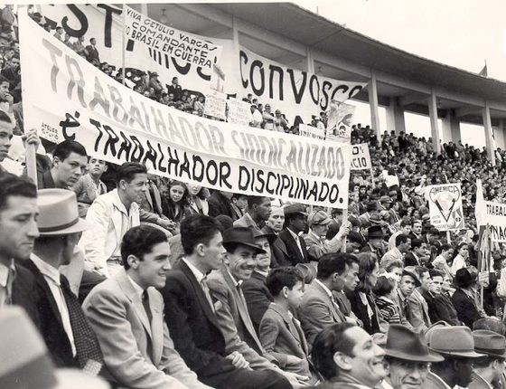
18Multidão no estádio do Pacaembu segurando faixas ('Viva Getúlio Vargas comandante do Brasil em guerra', 'Trabalhador sindicalizado é trabalhador disciplinado'), Dia do Trabalhador 1944 Fonte não encontradaverificar Legenda/crédito no texto: “Celebração do Dia do Trabalhador no estádio municipal do Pacaembú, em São Paulo, 1944 (Acervo CPDOC FGV).” Não localizada no Commons após várias buscas. Foto do acervo CPDOC-FGV, citado no próprio livro; provavelmente não digitalizada em acervo aberto.
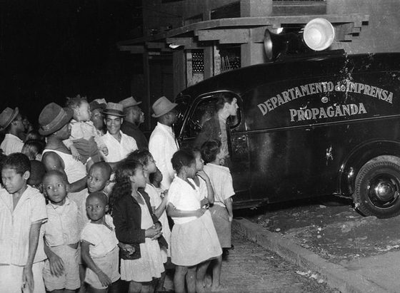
19Carro do Departamento de Imprensa e Propaganda (DIP) com alto-falantes, cercado por crianças e famílias à noite Fonte não encontradaverificar Legenda/crédito no texto: “Fonte: https://memorialdademocracia.com.br/” Não localizado no Commons após várias buscas (DIP, alto-falante, propaganda Estado Novo). Fonte original é o site Memorial da Democracia.
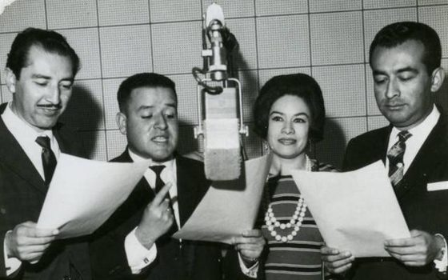
20Elenco de radionovela (3 homens e 1 mulher) lendo roteiro ao redor de um microfone de rádio antigo Fonte não encontradaverificar Legenda/crédito no texto: “Uma fotografia de uma radionovela e, a seguir, um pronunciamento oficial do presidente transmitido pelo rádio. Fonte: https://memorialdademocracia.com.br/” Não localizada no Commons nem na web após buscas. Fotos de elenco de radionovela são raramente catalogadas em acervos abertos.
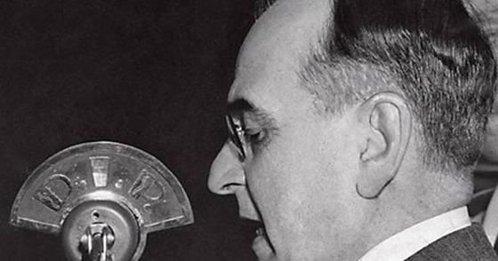
21Perfil de um homem falando a um microfone de rádio com a marca 'D.I.P.' (Departamento de Imprensa e Propaganda) Fonte não encontradaverificar Legenda/crédito no texto: “Uma fotografia de uma radionovela e, a seguir, um pronunciamento oficial do presidente transmitido pelo rádio. Fonte: https://memorialdademocracia.com.br/” Provavelmente Getúlio Vargas discursando ao microfone do DIP, mas não foi possível confirmar nem localizar esta foto específica no Commons; encontrada apenas outra foto diferente (1954, Correio da Manhã, microfone 'Agência Nacional') do mesmo tipo de cena - ver sugestões. Há sugestão de troca ver n.º 6 em Sugeridas
22Duplo painel ilustrado de cartilha de alfabetização: Vargas com crianças (esq.) e Vargas discursando a uma multidão infantil com bandeiras do Brasil (dir.) Fora do CommonsNão informada (reprodução de material de época em blog) Autor/fonte: Desconhecido (cartilha de alfabetização, anos 1940) Legenda/crédito no texto: “Capa de uma cartilha de alfabetização dos anos 40. Fonte: https://voltempramim.wordpress.com/wp-content/uploads/2012/11/cartilha-getulio.jpg” URL já indicada no próprio livro; verificada e ainda ativa/acessível, com a mesma imagem. Não está no Wikimedia Commons. Sem informação de licença - é reprodução de material de época num blog. fonte · arquivo original
23Distintivo/emblema da FEB (Força Expedicionária Brasileira): cobra fumando cachimbo sobre fundo amarelo, faixa 'BRASIL' e letras 'F E B' Similar (não é a mesma imagem)Public domain · 441×531 px Distintivo da FEB.PNG Autor/fonte: Tenente-coronel Senna Campos Legenda/crédito no texto: “O lema da FEB –Força Expedicionária Brasileira na I Guerra.” Mesmo símbolo (cobra fumando/BRASIL), mas variante gráfica ligeiramente diferente da do livro (que tem a faixa extra 'F E B' em blocos coloridos na base). Ver também File:FORÇA EXPEDICIONÁRIA BRASILEIRA (FEB).png e File:CobrasFumantes.svg, variantes similares no Commons - nenhuma é pixel-idêntica à do livro. Há sugestão de troca ver n.º 7 em Sugeridas página no Commons · arquivo original
24Presidente Eurico Gaspar Dutra corta fita/inaugura a Companhia Siderúrgica Nacional (CSN), cercado de autoridades civis e militares Encontrada no CommonsPublic domain · 2018×1438 px Inauguração pelo Presidente Eurico Gaspar Dutra da Companhia Siderúrgica Nacional (CSN).tif Autor/fonte: Desconhecido Legenda/crédito no texto: “Na segunda imagem, a inauguração da CSN já durante o mandato do Presidente Dutra.” Mesma foto (12 de outubro de 1946), confirmada visualmente, mesmas pessoas e poses. Resolução muito maior no Commons. página no Commons · arquivo original
Eleições e Regime de Eurico Gaspar Dutra (1946-1951)
25Logotipo/brasão do PTB (Partido Trabalhista Brasileiro): escudo amarelo com 'P T B', ramo com frutos e bigorna Encontrada no CommonsCC BY-SA 4.0 · 802×860 px PTB(1945) simbolo.png Autor/fonte: Przelijpdahl (recriação vetorial do símbolo original de 1945) Legenda/crédito no texto: “Logo do PTB entre 1945-1965 e uma reunião do Partido presidida por Leonel Brizola.” Mesmo desenho/símbolo do PTB (1945), confirmado visualmente; é uma recriação vetorial moderna do logotipo original, não um escaneamento de época, mas visualmente idêntica. página no Commons · arquivo original
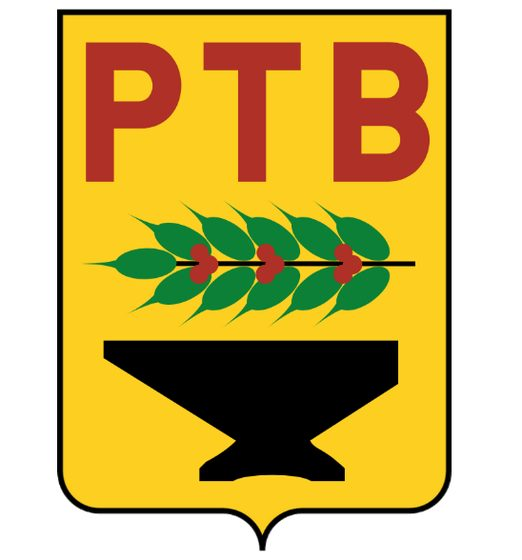
26Reunião do PTB com Leonel Brizola à mesa, faixa 'P.T.B.' e retrato (provavelmente de Vargas) ao fundo Fonte não encontradaverificar Legenda/crédito no texto: “Logo do PTB entre 1945-1965 e uma reunião do Partido presidida por Leonel Brizola. Fonte: Arquivo Nacional” Não localizada no Commons após buscas (PTB, Leonel Brizola, reunião de partido). Foto provavelmente restrita ao acervo do Arquivo Nacional citado no livro.
27Recorte de jornal 'A promulgação da Carta Magna' sobre a Constituição de 1946 Fora do CommonsNão informada (reprodução de recorte de jornal de época em site de notícias) Autor/fonte: Desconhecido (jornal da época, 1946) Legenda/crédito no texto: “Jornal da época anuncia a Constituição de 1946. https://www.migalhas.com.br/pilulas/287532/bau-migalheiro” URL já indicada no próprio livro; verificada e ainda ativa, com a mesma imagem do recorte de jornal. Não está no Wikimedia Commons. fonte · arquivo original
1951-1954: Vargas eleito diretamente
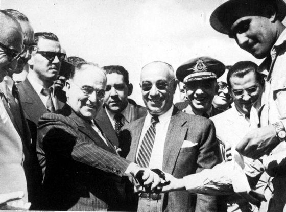
28Grupo de homens de terno cumprimentando-se sorridentes, com oficial da marinha e soldado ao lado, cerimônia pública Fonte não encontradaverificar Legenda/crédito no texto: “Fonte: Arquivo Nacional.” Não localizada no Commons após buscas (Petrobrás, cerimônias de Vargas 1953). Legenda no livro só cita 'Arquivo Nacional', sem mais detalhes para busca.
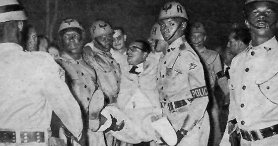
29Homem de óculos sendo amparado/carregado por policiais com capacete à noite, em meio a uma multidão - provavelmente Carlos Lacerda sendo socorrido após o atentado da Rua Tonelero (agosto de 1954) Fonte não encontradaverificar Legenda/crédito no texto: “Vargas e Gregório Fortunato, conhecido como o anjo negro. À direita, Carlos Lacerda após o atentado. Fontes: Cepar Consultoria e Arquivo Nacional do Rio de Janeiro.” Não localizada no Commons após buscas (atentado Rua Tonelero, Lacerda ferido/socorrido, 1954). Créditos do livro (Cepar Consultoria) sugerem acervo fechado.
30Getúlio Vargas cercado por dois seguranças do DFSP (Departamento Federal de Segurança Pública) - provavelmente incluindo Gregório Fortunato Encontrada no CommonsPublic domain · 240×320 px Getulio Vargas DFSP.jpg Autor/fonte: Governo do Brasil Legenda/crédito no texto: “Vargas e Gregório Fortunato, conhecido como o anjo negro. À direita, Carlos Lacerda após o atentado.” É o próprio arquivo-fonte do livro: mesmas dimensões exatas (240x320) e imagem pixel a pixel idêntica. página no Commons · arquivo original
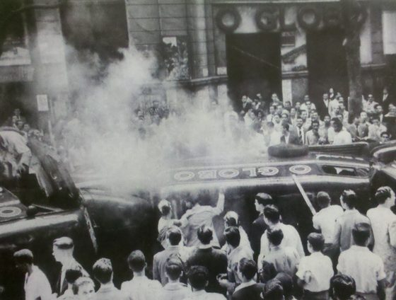
31Multidão em torno de um carro em chamas (com o letreiro 'O GLOBO') em frente a um prédio, provavelmente durante a revolta popular após o suicídio de Vargas em agosto de 1954 Fonte não encontradaverificar Legenda/crédito no texto: “Acervo Agência Globo. Historiadores afirmam que em 1954... a morte dolorosa e midiática de Vargas causou grande comoção nacional e revolta na população brasileira.” Não localizada no Commons após buscas (revolta popular, incêndio de carros, O Globo, agosto 1954). Crédito do livro (Acervo Agência Globo) é acervo fechado/proprietário.